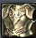
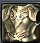

Welcome to the Elden Aion Wiki.
This is the Elden Aion Comprehensive Guide for both new players and veterans. Here, we will explain all the features included in the server, as well as provide guides for the 3.9 patch to help every player get started. We will continuesly adding more and updating this to also match up our live updates.
To find specific guide categories, use the search bar below, or simply browse the list of all available guides.
Note: Once you leave this page, a side panel will appear with a list of all guides, in case you want to check something else.

Intro into Elden Aion
 Introduction Into Elden Aion
Introduction into Aion's factions
Register and
Install Elden Aion
Introduction Into Elden Aion
Introduction into Aion's factions
Register and
Install Elden Aion
 Campaign Playthroughs
 Starter Gear
guide
Campaign Playthroughs
 Starter Gear
guide
 How to Unlock your
cube
How to Unlock your
cube
 How to
unlock your stigmas
How to
unlock your stigmas
 Lumen guide
Lumen guide
 Atreia's
pass guide
Atreia's
pass guide

 Gladiator guide
Gladiator guide  Templar
guide
Templar
guide Assassin guide
Assassin guide Ranger
guide
Ranger
guide  Sorcerer guide
Sorcerer guide Spiritmaster guide
Spiritmaster guide Chanter
guide
Chanter
guide Cleric
guide
Cleric
guide
Looking for something specific?
If you notice any errors, typos, or incorrect information, please report them to the staff as soon as possible. Thank you for your understanding!.